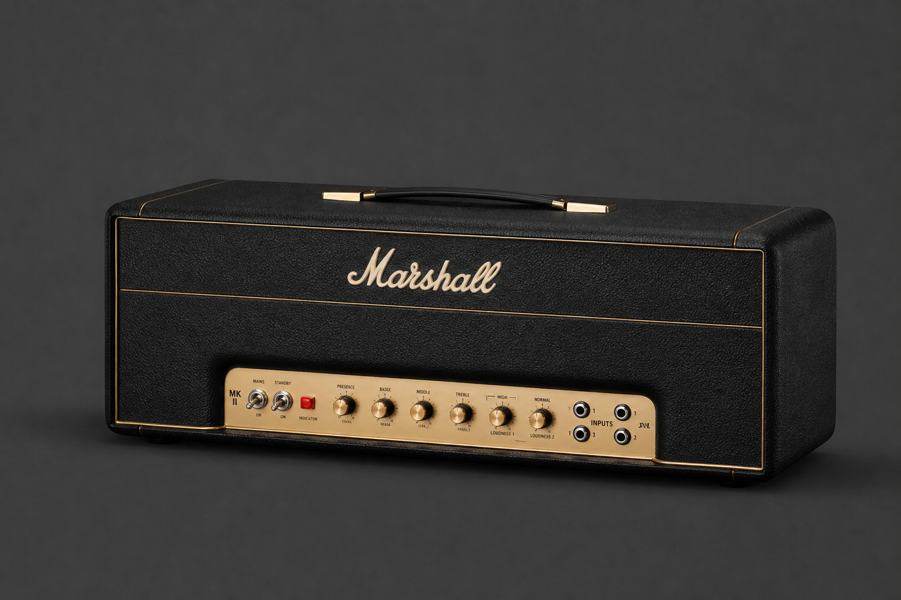
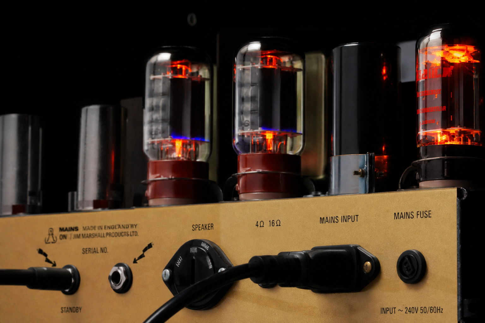
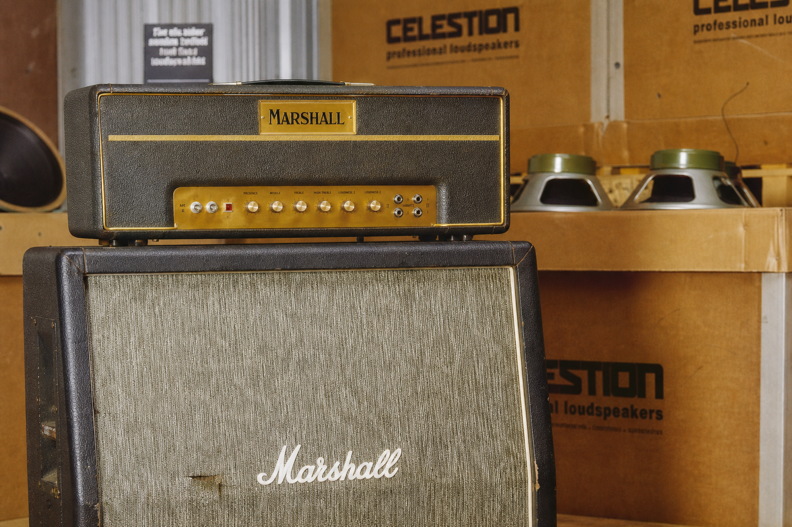
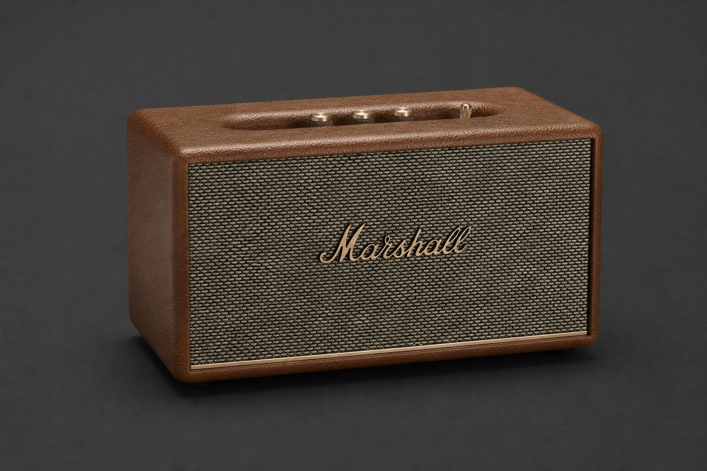
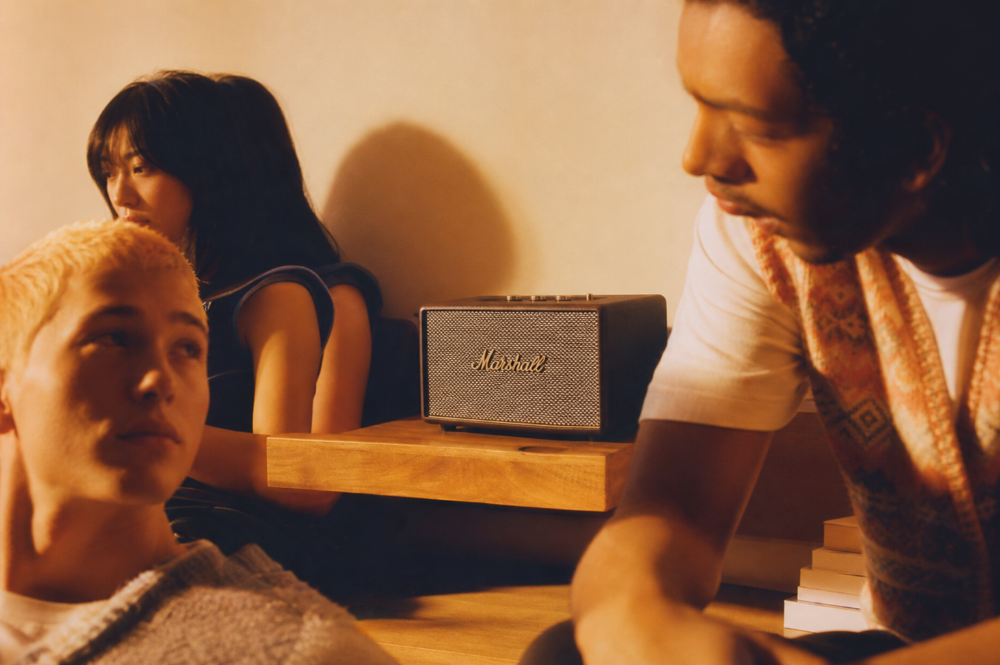
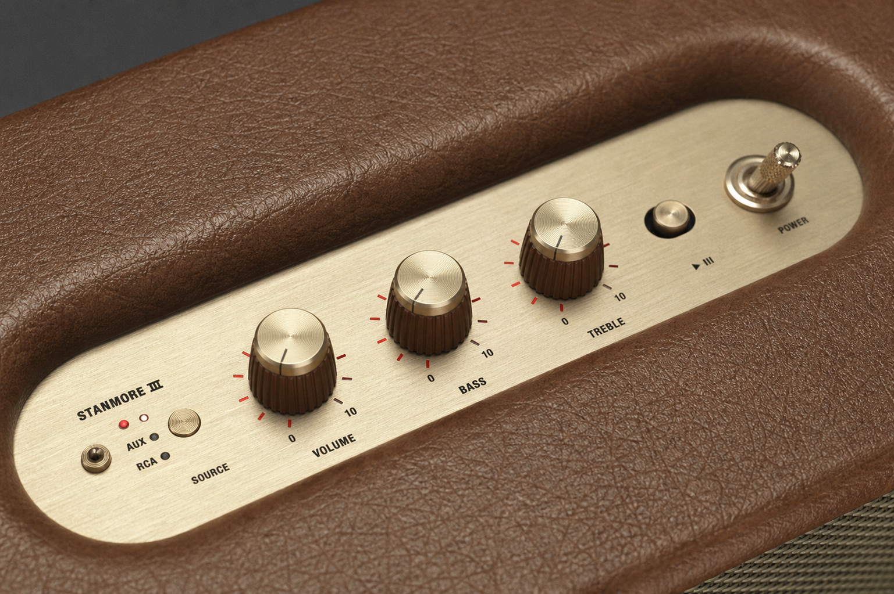
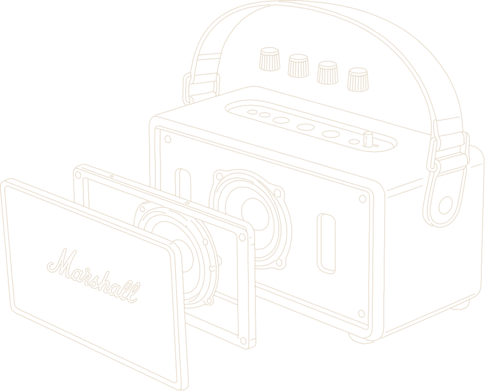
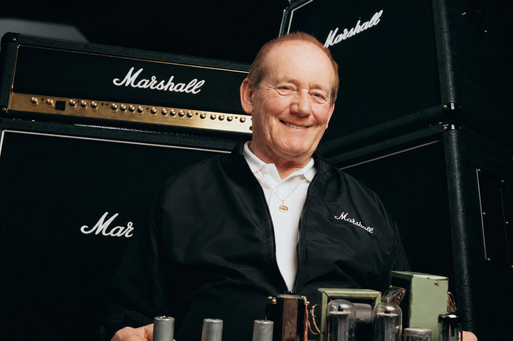

1962 - NOW
VOLUME 00
Marshall
1962
ABOUT
An interactive journey through the heritage,
volume, and analog spirit of Marshall.


THE BEGINNING
1962년, 더 크고 거친 사운드를 원했던 뮤지션들의 요구에서 시작되었다. 짐 마샬은 런던의 작은 악기점에서 당대 기타리스트들의 목소리를 들었다. 그들은 기존 앰프로는 만족할 수 없었다. 더 크고, 더 강렬하게, 무대를 가득 채울 사운드가 필요했다. 그 순간부터 Marshall은 단순한 앰프가 아닌 록 음악의 상징이 되기 시작했다.
Design shaped
by Sound
Design Shaped By Sound
Marshall의 디자인은 장식을 위해 만들어지지 않았다.
검은 외장, 브라스 노브, 토글 스위치, 우븐 그릴까지.
모든 요소는 무대 위에서 더 나은 사운드를 전달하기 위한 기능에서 시작되었다.
60년이 지난 지금도 그 디자인 언어는 그대로 이어지고 있다.
Built For The Stage
Marshall의 상징적인 디자인은 공연장에서 탄생했다.
강렬한 조명 아래에서도 쉽게 조작할 수 있는 노브,
빠르게 켜고 끌 수 있는 토글 스위치, 거친 이동에도 견디는 견고한 외장.
모든 디테일은 실제 무대를 위해 설계되었다.
The Evolution of
EVOLUTION
Prodoct
The JTM45 marked the beginning of Marshall's journey in 1962. Created in response to musicians seeking a louder and more powerful sound, it introduced the signature tone that would shape generations of rock music. More than an amplifier, it became the foundation of Marshall's legacy.
JTM45는 1962년 Marshall의 시작을 알린 최초의 앰프였다. 더 크고 강력한 사운드를 원하던 뮤지션들의 요구에 응답하며 탄생한 이 제품은, 이후 수많은 세대의 록 음악을 정의하게 될 Marshall만의 시그니처 사운드를 만들어냈다. JTM45는 단순한 앰프를 넘어 Marshall 헤리티지의 출발점이 되었다.



Stanmore III represents the evolution of Marshall's heritage for the modern era. Inspired by the design language of Marshall's legendary amplifiers, it combines iconic craftsmanship with contemporary listening technology. More than a speaker, it brings the spirit of the stage into everyday life.
Stanmore III는 Marshall의 헤리티지를 현대적으로 계승한 대표 모델이다. 전설적인 Marshall 앰프의 디자인 언어를 바탕으로, 상징적인 디테일과 현대적인 오디오 기술을 결합했다. 단순한 스피커를 넘어 무대의 에너지를 일상 속으로 확장한다.



Pure Analog Control
The signature Marshall volume knob is more than a control.
Its tactile resistance, precise movement, and analog feedback create a
physical connection between listener and sound.
Marshall의 시그니처 볼륨 노브는 단순한 조작 장치가 아니다.
손끝으로 느껴지는 적당한 저항감과 정교한 움직임은 사용자가 사운드와 직접 연결되어
있다는 감각을 만들어낸다.
No touchscreens. No unnecessary complexity.
Just the timeless ritual of turning a knob and feeling the music come alive.
An experience that remains unmistakably Marshall.
터치스크린도, 불필요한 복잡함도 없다.
노브를 돌리고 음악이 살아나는 순간을 직접 느끼는 것.
그것이 Marshall이 지금까지 지켜온 아날로그 경험이다.
Signature Sound
Marshall's design is built on details that have
endured for decades. From the iconic script logo
to the textured grille and brass-inspired controls,
every element serves as a reminder of its musical heritage.
Marshall의 디자인은 수십 년 동안 이어져 온 디테일 위에 구축되어 있다.
상징적인 스크립트 로고부터 텍스처 그릴과 브라스 노브까지, 모든 요소는
Marshall의 음악적 헤리티지를 담고 있다.

What began in a small London shop became one of music's
most recognizable icons. Built on passion, craftsmanship,
and a relentless pursuit of louder sound.
The products may change. The spirit remains.
런던의 작은 악기점에서 시작된 이야기는
음악 역사상 가장 상징적인 브랜드 중 하나로 성장했다.
열정과 장인정신, 그리고 더 큰 사운드를 향한 끊임없는 도전 위에서,
제품은 변할 수 있다. 하지만 Marshall의 정신은 여전히 그대로다.
The Legacy
What began in a small London shop became one of music's most
recognizable icons. From legendary stages to everyday spaces, Marshall continues
to amplify the culture, passion, and sound that connect generations.
What began in a small London shop became one of music's
most recognizable icons.
Built on passion, craftsmanship, and a relentless pursuit of
louder sound.
The products may change. The spirit remains.
Marshall의 영향력은 유행보다 진정성을, 편리함보다 경험을 중요하게 생각
하는 새로운 세대의 뮤지션과 크리에이터, 그리고 음악 애호가들에게 계속해
서 영감을 주고 있다.
Fin.
Thank you for exploring the volume, heritage,
and culture of Marshall.
The story began in 1962.
It is still being amplified today.
